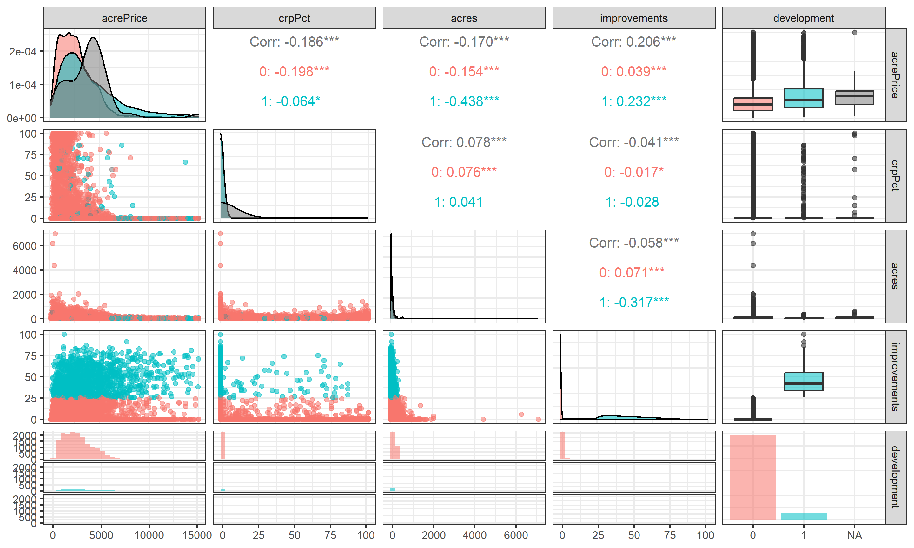

Interaction terms in MLR and Difference in Difference (DID)
MLR with an interaction term
Interaction term
\[ y = \beta_0 + \beta_1 x_1 + \beta_2 x_2 + \beta_3 (x_1 \cdot x_2) + \beta_4 x_4 + \epsilon \]
Interpretation is only possible through marginal effects:
Marginal effect is a partial derivative of the regression equation with respect to a regressor of interest evaluated at certain value of the interaction term.
\(\frac{\partial y}{\partial x_1} = \beta_1 + \beta_3 x_2\)
\(\frac{\partial y}{\partial x_2} = \beta_2 + \beta_3 x_1\)
Marginal Effect (the slope) of \(x_1\) depends on \(x_2\) and vice versa.
Reporting results with marginal effects
Report coefficients \(\beta_1\), \(\beta_2\), \(\beta_3\) as is.
Report marginal effects at mean values of the interaction term(s):
\(\text{ME}(\bar x_1) = \beta_1 + \beta_3 \bar x_2\)
\(\text{ME}(\bar x_2) = \beta_2 + \beta_3 \bar x_1\)
To compute standard errors for the marginal effects, we use delta method.
Learn more: (Angrist & Pischke, 2009, also Chapter 3)
Recall the hedonic land prices model:
\[ \text{acrePrice} = \beta_0 + \beta_1 \text{crpPct} + \beta_2 \text{acres} + \beta_3 \text{improvements} \\ + \beta_4 \text{year} + \beta_5 \text{region} + e \]
acrePrice- sale price in dollars per acre;crpPct- the percentage of all farm acres enrolled in CRP;acres- size of the farm in acres;improvements- share of infrastructure’s value in the land price;development- dummy variable aliased withimprovements. Is 1 when improvements > 25% and is 0 otherwise.region- region in the state Minnesota;year- year of the land sales translation;
Loading data
Warning: package 'modelsummary' was built under R version 4.2.3Warning: package 'marginaleffects' was built under R version 4.2.3Warning: package 'GGally' was built under R version 4.2.3Registered S3 method overwritten by 'GGally':
method from
+.gg ggplot2Warning in mask$eval_all_mutate(quo): NAs introduced by coercionWarning in mask$eval_all_mutate(quo): NAs introduced by coercion
Warning in mask$eval_all_mutate(quo): NAs introduced by coercionShow the code
library(tidyverse)
library(readxl)
library(modelsummary)
library(ggeffects)
library(marginaleffects)
library(GGally)
options(modelsummary_get = "broom")
## 1. Load the data
dta <- read_excel("land-prices.xlsx") %>%
mutate(improvements = as.numeric(improvements),
development = as.factor(as.integer(improvements > 25)),
productivity = as.numeric(productivity),
tillable = as.numeric(tillable),
year = as.factor(year)) %>%
select(acrePrice, crpPct, acres, improvements, development, region, year)
glimpse(dta)Descriptive statistics
Show the code
| mean | sd | min | median | max | |
|---|---|---|---|---|---|
| acrePrice | 2787.33 | 1914.04 | 108.00 | 2442.00 | 15000.00 |
| crpPct | 4.16 | 17.17 | 0.00 | 0.00 | 100.00 |
| acres | 112.69 | 128.46 | 1.00 | 80.00 | 6970.00 |
| improvements | 4.49 | 12.94 | 0.00 | 0.00 | 100.00 |
| as.integer(development) | 1.08 | 0.26 | 1.00 | 1.00 | 2.00 |
Descriptive Plots
Show the code
Warning in ggally_statistic(data = data, mapping = mapping, na.rm = na.rm, :
Removed 50 rows containing missing values
Warning in ggally_statistic(data = data, mapping = mapping, na.rm = na.rm, :
Removed 50 rows containing missing values
Warning in ggally_statistic(data = data, mapping = mapping, na.rm = na.rm, :
Removed 50 rows containing missing values
Warning in ggally_statistic(data = data, mapping = mapping, na.rm = na.rm, :
Removed 50 rows containing missing values
Warning in ggally_statistic(data = data, mapping = mapping, na.rm = na.rm, :
Removed 50 rows containing missing values
Warning in ggally_statistic(data = data, mapping = mapping, na.rm = na.rm, :
Removed 50 rows containing missing valuesWarning: Removed 50 rows containing missing values (`geom_point()`).
Removed 50 rows containing missing values (`geom_point()`).
Removed 50 rows containing missing values (`geom_point()`).Warning: Removed 50 rows containing non-finite values (`stat_density()`).Warning: Removed 50 rows containing non-finite values (`stat_boxplot()`).`stat_bin()` using `bins = 30`. Pick better value with `binwidth`.
`stat_bin()` using `bins = 30`. Pick better value with `binwidth`.
`stat_bin()` using `bins = 30`. Pick better value with `binwidth`.
`stat_bin()` using `bins = 30`. Pick better value with `binwidth`.Warning: Removed 50 rows containing non-finite values (`stat_bin()`).
Example 1. Basic regressions
Show the code
fit1 <-
lm(acrePrice ~ acres + development + crpPct + region + factor(year),
data = dta)
summ <-
function(x, coef_omit = "reg|year", output = "html", notes = NULL, ...) {
modelsummary(
x,
estimate = "{estimate}{stars} ({std.error})",
statistic = NULL,
output = output,
gof_omit = c("AIC|BIC|Log|F|RMS"),
coef_omit = coef_omit,
notes = notes,
...
)
}
cust_summ <- function(x, coef_omit = "reg|year", output = "markdown", ...) {
x <- set_names(x, str_c("Model ", seq_along(x)))
all_eq <- x %>% imap_chr(. , ~ {str_c(.y, ": ", as.character(.x$call)[[2]])}) %>%
str_c(collapse = "</br>")
summ(x, coef_omit = coef_omit, output = output, notes = all_eq, ...)
}Interpret the baseline results
Fitted vs area and development
Fitted vs area and development (2)
Example 2. Interaction term with a binary variable
Show the code
| Model 1 | Model 2 | |
|---|---|---|
| (Intercept) | 2019.877*** (65.416) | 1997.055*** (64.413) |
| acres | -0.857*** (0.086) | -0.652*** (0.085) |
| development1 | 1555.287*** (41.467) | 2978.491*** (71.424) |
| crpPct | -8.892*** (0.645) | -9.073*** (0.635) |
| acres × development1 | -18.053*** (0.743) | |
| :——————— | ———————: | ———————: |
| Num.Obs. | 18650 | 18650 |
| R2 | 0.413 | 0.431 |
| R2 Adj. | 0.412 | 0.430 |
Note: ^^ Model 1: acrePrice ~ acres + development + crpPct + region + factor(year)
Model 2: acrePrice ~ acres * development + crpPct + region + factor(year)
Fitted vs development with an interaction term

Fitted vs area with an interaction term
Marginal Effect acres and development at means
Show the code
| Coef. as is | M.E. at means | |
|---|---|---|
| acres | −0.652*** (0.085) | −2.017*** (0.097) |
| crpPct | −9.073*** (0.635) | −9.073*** (0.635) |
| development1 | 2978.491*** (71.424) | 944.727*** (47.947) |
| acres * development1 | −18.053*** (0.743) | |
| Num.Obs. | 18650 | 18650 |
| R2 | 0.431 | 0.431 |
| R2 Adj. | 0.430 | 0.430 |
Marginal Effect acres and development (visually)
Example 3. Interaction with a continuous variable
Show the code
| Model 1 | Model 2 | Model 3 | |
|---|---|---|---|
| (Intercept) | 2019.877*** (65.416) | 1997.055*** (64.413) | 1923.131*** (64.085) |
| acres | -0.857*** (0.086) | -0.652*** (0.085) | -0.276** (0.089) |
| development1 | 1555.287*** (41.467) | 2978.491*** (71.424) | |
| crpPct | -8.892*** (0.645) | -9.073*** (0.635) | -8.980*** (0.631) |
| acres × development1 | -18.053*** (0.743) | ||
| improvements | 56.695*** (1.307) | ||
| acres × improvements | -0.277*** (0.014) | ||
| :——————— | ———————: | ———————: | ———————: |
| Num.Obs. | 18650 | 18650 | 18650 |
| R2 | 0.413 | 0.431 | 0.438 |
| R2 Adj. | 0.412 | 0.430 | 0.438 |
Note: ^^ Model 1: acrePrice ~ acres + development + crpPct + region + factor(year)
Model 2: acrePrice ~ acres * development + crpPct + region + factor(year)
Model 3: acrePrice ~ acres * improvements + crpPct + region + factor(year)
Fitted vs area * improvements
Marginal Effect acres * improvements (visually)
Reporting all regressions results
Show the code
modelsummary(
list(
`Model 1 (no interaction)` = fit1,
`Model 2 (Area*Development)` = marginaleffects(fit2, vcov = ~ region),
`Model 3 (Area*Improvements)` = slopes(fit3, vcov = ~ region)
),
vcov = list(~ region, NULL, NULL),
estimate = "{estimate}{stars} ({std.error})",
statistic = NULL,
gof_omit = c("AIC|BIC|Log|F|RMS|Std"),
output = "html",
coef_map = c(
"acres" = "Area, acres (*)",
"crpPct" = "crpPct",
"development" = "Development status, dummy (*)",
"improvements" = "Share infrastructure in land price, % (*)"
),
notes = "(*) marginal effects of the coefficients are reported at means of the corresponding interaction terms. Robust standard errors clustered at region are reported in brackets. For marginal effects, standard errors are estimated using delta method."
)| Model 1 (no interaction) | Model 2 (Area*Development) | Model 3 (Area*Improvements) | |
|---|---|---|---|
| Area, acres (*) | −0.857* (0.350) | −2.017*** (0.097) | −1.520*** (0.089) |
| crpPct | −8.892*** (1.998) | −9.073*** (0.635) | −8.980*** (0.631) |
| Development status, dummy (*) | 944.727*** (47.947) | ||
| Share infrastructure in land price, % (*) | 25.490*** (0.984) | ||
| Num.Obs. | 18650 | 18650 | 18650 |
| R2 | 0.413 | 0.431 | 0.438 |
| R2 Adj. | 0.412 | 0.430 | 0.438 |
| (*) marginal effects of the coefficients are reported at means of the corresponding interaction terms. Robust standard errors clustered at region are reported in brackets. For marginal effects, standard errors are estimated using delta method. |
Takeaway and homework
Takeaway and homework
Marginal effects.
Difference between fitted values and marginal effects.
Homework:
Reproduce code from the slides.
Follow pre-recorded materials with extra calculations.